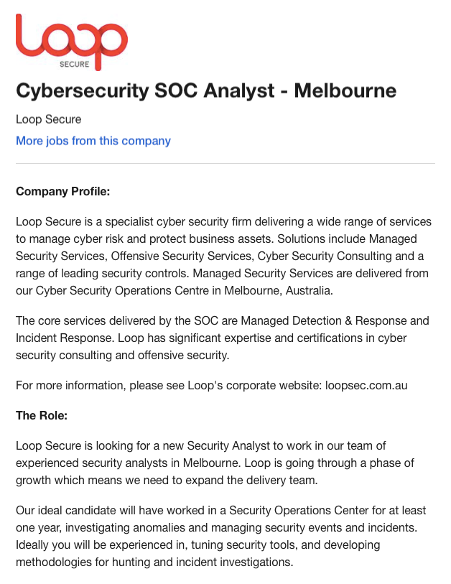

Ideal Job
Job Advertisement: SOC Analyst

A cybersecurity SOC analyst is a professional who in a group/team works together. This team is in control of monitoring and
handling cyber threats to a company such as protecting online data from being compromised or defending against cyber-attacks.
An SOC analyst is also in control of assessing security measures to see if there are any possible weaknesses as well as any room
for improvements in the security system. This is a career which I am interested in as cybersecurity has always seemed intriguing
to me, I enjoy problem solving and working in teams which is also a big skill required to undertake the tasks involved in the job.
To become a SOC analyst there are skills, qualifications and experience needed to be considered for the position, this helps
demonstrate your understanding of the job. The better and more advanced your resume is the more suitable and outstanding you will
be for the job. Some of the skills, qualifications and experience needed are:
Skills
• Strong understanding of IT operations: Help desk, endpoint management and server management.
• Strong ability to communicate: write clearly and speak authoritatively to different kinds of audiences (business leaders and techies).
• Strong understanding of adversary Motivations: cyber-crime, cyber hacktivism, cyber war, cyber espionage and the difference between cyber propaganda and cyber terrorism.
• Strong understanding of security operations concepts: Perimeter defence, BYOD management, data loss protection, insider threat, kill chain analysis, risk assessment and security metrics.
• Strong understanding of basic computer science: Algorithms, data structures, databases, operating systems, networks, and tool development (not production quality software, but tools that can help you do stuff).
Qualifications
• Complete a bachelor’s degree in computer science, programming, or a related field.
• Consider completing a relevant industry certification, such as CompTIA Security +, Certified Ethical Hacker (ESH), and Certified Information System Security Professional (CISSP).
• Gain a Master of Business Administration (MBA) in information systems.
Experience
• Gain work experience in a related field. Information Security Analysts generally need to have experience working in an information technology department, often working
as a network, systems or database administrator. Alternatively, you may initially work as a Computer Systems Analyst.
A cybersecurity SOC analyst is a profession which I am aiming towards, but for me to achieve that I need to improve on my skills, obtain relevant qualifications and gain the experience needed.
The skills I currently have are basic programming and coding skills and a basic understanding of the theoretical aspects of IT. On the academic side I have so far achieved a Diploma of IT and am currently
on the road to obtaining my Bachelors of IT. Once I have completed this major, I will then head into masters of Cyber Security as these qualifications will ensure my position in my future occupation.
I haven’t had any experience in the IT field yet but once I have improved on my skills and understanding I will place myself in the correct environment to help me improve and develop on my skills as well as gaining essential experience.
Skills, experience and qualifications are essential for any professional work and a plan is vital to ensure you achieve these. The skills and qualifications aspects come hand in hand
for the position of a SOC analyst. Firstly, I would need to choose the relevant qualification which is either complete a bachelor’s degree in computer science, programming, or a related
field and begin studies. After I have completed one of these qualifications it is then recommended that I obtain a second qualification in Master of Business Administration (MBA) in information
systems as this is the final qualification needed. During the duration of these majors I would have picked up numerous skills which are relevant to the position of an SOC analyst. The skills which
I would end up developing are, a strong understanding of IT operations, having a strong ability to communicate, a strong understanding of adversary motivation, a strong understanding of security
operations concepts and a strong understanding of basic computer concepts. To further improve on my skills and pick up other relevant skills which is not taught to me is best learnt from experience.
By placing myself in the environment of a SOC analyst I am able to correctly understand the work environment and how everything functions. Knowing how the team works, communicates and coexists will
give me an understanding of the work procedures and functionalities. This will make me suitable for the job.